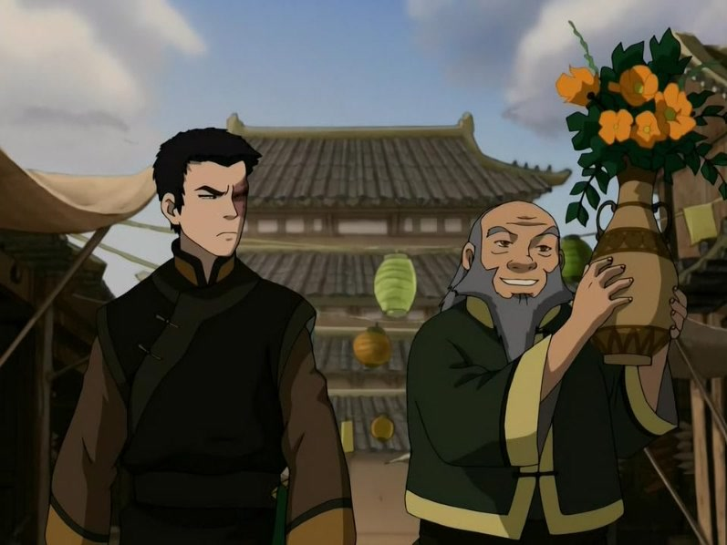
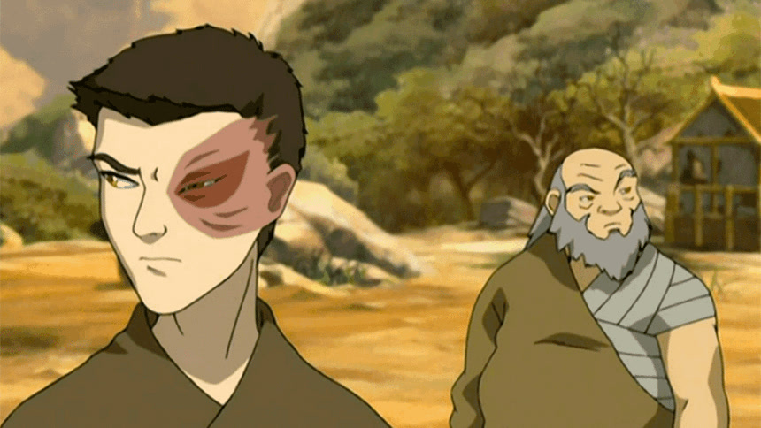
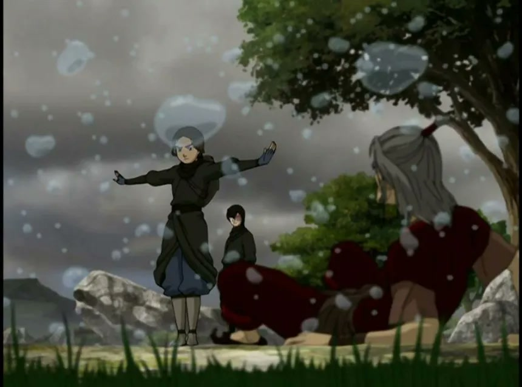

— This city is a prison. I don't want to make a life here.
— Life happens wherever you are, whether you make it or not.

— This city is a prison. I don't want to make a life here.
— Life happens wherever you are, whether you make it or not.

— TY LEE: Calm down, you guys. This much negative energy is bad for your skin. You'll totally break out.
— ZUKO: Bad skin? Normal teenagers worry about bad skin. I don't have that luxury. My father decided to teach me a permanent lesson on my face.
— TY LEE: Sorry, Zuko. I...
— ZUKO: For so long I thought that if my Dad accepted me, I'd be happy. I'm back home now. My Dad talks to me. Ha! He even thinks I'm a hero. Everything should be perfect, right? I should be happy now, but I'm not! I'm angrier than ever and I don't know why!
— AZULA: There's a simple question you need to answer then. Who are you angry at?
— ZUKO: No one. I'm just angry.
— MAI: Yeah, who are you angry at, Zuko?
— ZUKO: Everyone. I don't know.
— AZULA: Is it Dad?
— ZUKO: No, no.
— TY LEE: Your uncle?
— AZULA: Me?
— ZUKO: No, no, no, no!
— MAI: Then who? Who are you angry at?
— AZULA: Answer the question, Zuko.
— TY LEE: Talk to us.
— MAI: Come on. Answer the question.
— AZULA: Come on, answer it.
— ZUKO: I'm angry at myself!
— AZULA: Why?
— ZUKO: Because I'm confused. Because I'm not sure I know the difference between right and wrong anymore.
— IROH: Fire is the element of power. The people of the Fire Nation have desire and will, and the energy and drive to achieve what they want.
— IROH: Earth is the element of substance. The people of the Earth Kingdom are diverse and strong. They are persistent and enduring.
— IROH: Air is the element of freedom. The Air Nomads detached themselves from worldly concerns, and they found peace and freedom.
— IROH: And they apparently had great senses of humor.
— IROH: Water is the element of change. The people of the Water Tribes are capable of adapting to many things. They have a sense of community and love that holds them together through anything.
— ZUKO: Why are you teaching me these things?
— IROH: It is important to draw wisdom from different places. If you take it from only one place it become rigid and stale. Understanding others, the other elements, the other nations, will help you become whole.
— ZUKO: All this four elements talk, is sounding like Avatar stuff.
— IROH: It is the combination of the four elements in one person that makes the Avatar so powerful. But it can make you more powerful too.

— AANG: Um … and what exactly do you think this will accomplish?
— KATARA: Ugh, I knew you wouldn’t understand.
— AANG: Wait! Stop! I do understand. You’re feeling unbelievable pain and rage.
— AANG: How do think I felt about the sandbenders when they stole Appa?
— AANG: How do you think I felt about the Fire Nation when I found out what happened to my people?
— ZUKO: She needs this, Aang. This is about getting closure, and justice.
— AANG: You did the right thing. Forgiveness is the first step you have to take to begin healing.
— KATARA: But I didn’t forgive him. I’ll never forgive him. — TO ZUKO — But I am ready to forgive you.
